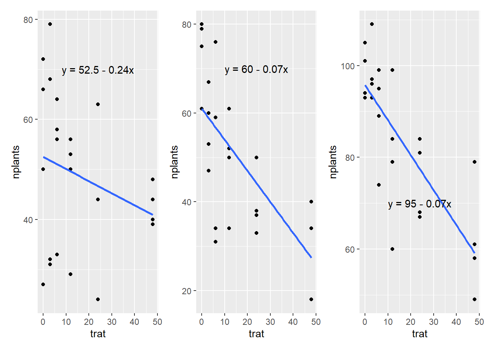

Quando trabalhamos com dados quantitativos, a análise de regressão geralmente se mostra mais adequada do que a análise de variância (ANOVA). Isso ocorre porque a regressão permite modelar e prever a relação entre uma variável dependente (Y) e uma ou mais variáveis independentes (X). O objetivo é estimar os parâmetros de uma equação que descreve essa relação funcional, possibilitando compreender não apenas a direção e a intensidade do efeito das variáveis independentes sobre a dependente, mas também fazer previsões para valores que ainda não foram observados.
Regressão linear simples
Na regressão linear simples, presume-se que a relação entre a variável dependente e a variável independente seja linear, isto é, possa ser representada por uma reta. A equação que define essa relação é dada por:
y=β0+β1x+ε,
onde y é a variável dependente (resposta), x é a variável independente (fator ou tratamento), β00 é o intercepto da reta, β11 é o coeficiente angular (inclinação), e ε representa o termo de erro aleatório.
O principal objetivo na regressão linear simples é testar se a inclinação da reta, β1 , é significativamente diferente de zero. Em outras palavras, verifica-se se existe uma relação estatisticamente significativa entre as variáveis, indicando que a variável independente influencia a variável dependente.
Após a coleta dos dados, é importante identificar o modelo que melhor se adapta às observações. Para isso, pode-se realizar a análise de regressão separadamente para cada experimento, analisando-os individualmente, ou então aplicar modelos mistos que considerem os dados agrupados.
Análise isolada por experimento
Para analisar cada experimento de forma isolada, inicialmente cria-se um novo objeto com o conjunto completo de dados (por exemplo, exp1). Em seguida, deve-se filtrar esse objeto para selecionar apenas os dados do experimento de interesse, criando um novo subconjunto. Esse procedimento facilita a aplicação da análise de regressão específica para aquele conjunto, permitindo avaliar o ajuste do modelo para cada experimento individualmente.
1-
Code
exp1 <- estande |>filter(exp ==1)m1 <-lm(nplants ~trat, data = exp1)summary(m1)
Call:
lm(formula = nplants ~ trat, data = exp1)
Residuals:
Min 1Q Median 3Q Max
-25.500 -6.532 1.758 8.573 27.226
Coefficients:
Estimate Std. Error t value Pr(>|t|)
(Intercept) 52.5000 4.2044 12.487 1.84e-11 ***
trat -0.2419 0.1859 -1.301 0.207
---
Signif. codes: 0 '***' 0.001 '**' 0.01 '*' 0.05 '.' 0.1 ' ' 1
Residual standard error: 15 on 22 degrees of freedom
Multiple R-squared: 0.07148, Adjusted R-squared: 0.02928
F-statistic: 1.694 on 1 and 22 DF, p-value: 0.2066
2-
Code
exp2 <- estande |>filter(exp ==2)m2 <-lm(nplants ~trat, data = exp2)summary(m2)
Call:
lm(formula = nplants ~ trat, data = exp2)
Residuals:
Min 1Q Median 3Q Max
-25.7816 -7.7150 0.5653 8.1929 19.2184
Coefficients:
Estimate Std. Error t value Pr(>|t|)
(Intercept) 60.9857 3.6304 16.798 4.93e-14 ***
trat -0.7007 0.1605 -4.365 0.000247 ***
---
Signif. codes: 0 '***' 0.001 '**' 0.01 '*' 0.05 '.' 0.1 ' ' 1
Residual standard error: 12.95 on 22 degrees of freedom
Multiple R-squared: 0.4641, Adjusted R-squared: 0.4398
F-statistic: 19.05 on 1 and 22 DF, p-value: 0.0002473
3-
Code
exp3 <- estande |>filter(exp ==3)m3 <-lm(nplants ~trat, data = exp3)summary(m3)
Call:
lm(formula = nplants ~ trat, data = exp3)
Residuals:
Min 1Q Median 3Q Max
-26.5887 -3.9597 0.7177 5.5806 19.8952
Coefficients:
Estimate Std. Error t value Pr(>|t|)
(Intercept) 95.7500 2.9529 32.425 < 2e-16 ***
trat -0.7634 0.1306 -5.847 6.97e-06 ***
---
Signif. codes: 0 '***' 0.001 '**' 0.01 '*' 0.05 '.' 0.1 ' ' 1
Residual standard error: 10.53 on 22 degrees of freedom
Multiple R-squared: 0.6085, Adjusted R-squared: 0.5907
F-statistic: 34.19 on 1 and 22 DF, p-value: 6.968e-06
Code
library(report)report(m3)
We fitted a linear model (estimated using OLS) to predict nplants with trat
(formula: nplants ~ trat). The model explains a statistically significant and
substantial proportion of variance (R2 = 0.61, F(1, 22) = 34.19, p < .001, adj.
R2 = 0.59). The model's intercept, corresponding to trat = 0, is at 95.75 (95%
CI [89.63, 101.87], t(22) = 32.43, p < .001). Within this model:
- The effect of trat is statistically significant and negative (beta = -0.76,
95% CI [-1.03, -0.49], t(22) = -5.85, p < .001; Std. beta = -0.78, 95% CI
[-1.06, -0.50])
Standardized parameters were obtained by fitting the model on a standardized
version of the dataset. 95% Confidence Intervals (CIs) and p-values were
computed using a Wald t-distribution approximation.
Gráfico com os 3 expeimentos:
Code
g1 <- exp1 |>ggplot(aes(trat, nplants))+geom_point()+geom_smooth(method ="lm", se = F)+annotate(geom ="text", x =24,y =70, label ="y = 52.5 - 0.24x")g2 <- exp2 |>ggplot(aes(trat, nplants))+geom_point()+geom_smooth(method ="lm", se = F)+annotate(geom ="text", x =24,y =70, label ="y = 60 - 0.07x")g3 <- exp3 |>ggplot(aes(trat, nplants))+geom_point()+geom_smooth(method ="lm", se = F)+annotate(geom ="text", x =24,y =70, label ="y = 95 - 0.07x")library(patchwork)g1|g2|g3

Modelo misto
Em um modelo misto, os dados são organizados em grupos ou subgrupos, permitindo que cada grupo apresente efeitos aleatórios e/ou fixos distintos, conforme a estrutura dos dados. Por exemplo, quando as observações são coletadas em diferentes locais geográficos, é comum modelar um efeito aleatório para cada local, como acontece no conjunto de dados estande. Dessa forma, o modelo misto consegue capturar a variação intra e intergrupos, oferecendo uma análise mais robusta quando há dependência ou heterogeneidade entre os grupos.
Linear mixed model fit by REML ['lmerMod']
Formula: nplants ~ trat + (trat | exp)
Data: estande
REML criterion at convergence: 580.8
Scaled residuals:
Min 1Q Median 3Q Max
-2.0988 -0.6091 0.1722 0.6360 1.9963
Random effects:
Groups Name Variance Std.Dev. Corr
exp (Intercept) 510.68405 22.5983
trat 0.05516 0.2349 -0.82
Residual 167.91303 12.9581
Number of obs: 72, groups: exp, 3
Fixed effects:
Estimate Std. Error t value
(Intercept) 69.7452 13.2146 5.278
trat -0.5687 0.1643 -3.462
Correlation of Fixed Effects:
(Intr)
trat -0.731
optimizer (nloptwrap) convergence code: 0 (OK)
Model failed to converge with max|grad| = 0.00274249 (tol = 0.002, component 1)
No modelo misto, todos os experimentos são analisados em conjunto, assumindo que as amostras são aleatórias e pertencem a uma população maior. Para realizar a regressão em grupo (modelo misto), adiciona-se o argumento group = exp dentro da função aes() (estética), o que permite diferenciar os experimentos e ajustar o modelo considerando essa estrutura agrupada.
De modo geral, modelos mistos apresentam maior capacidade do que abordagens que analisam cada experimento separadamente, pois consideram simultaneamente a variabilidade entre os diferentes experimentos e a variabilidade interna a cada um deles. Além disso, esses modelos permitem a análise integrada de todo o conjunto de dados, preservando informações importantes sobre a estrutura hierárquica ou agrupada das observações.
Modelo linear generalizado (GLM)
O modelo linear generalizado (GLM) é uma extensão do modelo linear clássico, projetado para acomodar diferentes tipos de variáveis resposta, como variáveis contínuas, binárias ou categóricas. Além disso, o GLM flexibiliza a relação entre as variáveis explicativas e a variável resposta, permitindo que essa relação seja não-linear por meio de funções de ligação, o que amplia seu campo de aplicação para diversos contextos onde o modelo linear tradicional não é adequado.
Code
lm1 <-lm(nplants ~ trat, data = exp3)summary(lm1)
Call:
lm(formula = nplants ~ trat, data = exp3)
Residuals:
Min 1Q Median 3Q Max
-26.5887 -3.9597 0.7177 5.5806 19.8952
Coefficients:
Estimate Std. Error t value Pr(>|t|)
(Intercept) 95.7500 2.9529 32.425 < 2e-16 ***
trat -0.7634 0.1306 -5.847 6.97e-06 ***
---
Signif. codes: 0 '***' 0.001 '**' 0.01 '*' 0.05 '.' 0.1 ' ' 1
Residual standard error: 10.53 on 22 degrees of freedom
Multiple R-squared: 0.6085, Adjusted R-squared: 0.5907
F-statistic: 34.19 on 1 and 22 DF, p-value: 6.968e-06
Code
glm1 <-glm(nplants ~ trat, family ="gaussian",data = exp3)glm2 <-glm(nplants ~ trat, family =poisson(link ="log"),data = exp3)AIC(glm1)
[1] 185.0449
Code
AIC(glm2)
[1] 183.9324
Code
summary(glm1)
Call:
glm(formula = nplants ~ trat, family = "gaussian", data = exp3)
Coefficients:
Estimate Std. Error t value Pr(>|t|)
(Intercept) 95.7500 2.9529 32.425 < 2e-16 ***
trat -0.7634 0.1306 -5.847 6.97e-06 ***
---
Signif. codes: 0 '***' 0.001 '**' 0.01 '*' 0.05 '.' 0.1 ' ' 1
(Dispersion parameter for gaussian family taken to be 110.9787)
Null deviance: 6235.8 on 23 degrees of freedom
Residual deviance: 2441.5 on 22 degrees of freedom
AIC: 185.04
Number of Fisher Scoring iterations: 2
Regressão não-linear
Regressão não linear
Quando a relação entre a variável dependente e as variáveis independentes não pode ser representada adequadamente por uma linha reta, utiliza-se a regressão não linear. Essa abordagem é necessária quando os dados apresentam padrões curvilíneos ou complexos, exigindo modelos mais flexíveis para descrever a relação entre as variáveis de forma precisa.
Regressão não linear para determinação de EC50
A regressão não linear é amplamente utilizada para estimar valores como a EC50 (Concentração Efetiva 50%), que representa a dose necessária para alcançar 50% do efeito máximo. Nesse caso, modelos log-logísticos ou sigmoides são frequentemente aplicados, pois descrevem bem o comportamento típico de curvas dose-resposta. Essa modelagem permite calcular com precisão o ponto de inflexão da curva, onde ocorre metade do efeito observado.
O comando options(scipen = 999) altera o parâmetro de exibição numérica no R, evitando que os números sejam mostrados em notação científica. Ao definir esse valor como 999, garante-se que os números sejam apresentados de forma completa, facilitando a leitura em análises e gráficos.
O bloco de comandos aplicado ao dataframe dat executa as seguintes etapas:
Remove as colunas "Isolate" e "Population", eliminando essas variáveis do novo conjunto de dados.
Agrupa os dados restantes com base nas colunas "Code", "Year" e "Dose".
Calcula a média da variável "GC" dentro de cada grupo formado, utilizando summarise(GC_mean = mean(GC)).
O resultado é um novo dataframe, chamado dat2, que contém a média de GC (GC_mean) para cada combinação de código, ano e dose.
O pacote drc é amplamente utilizado para ajustar modelos de regressão dose-resposta, especialmente em estudos biológicos e toxicológicos. Ele oferece uma variedade de funções para modelar curvas de resposta a diferentes níveis de dose, fornecendo suporte para modelos como log-logístico, log-probit, Weibull, entre outros. Um dos principais recursos do pacote é a estimativa de valores como a EC50 — a dose necessária para provocar 50% do efeito máximo.
Modelo log-logístico de 3 parâmetros (LL.3)
O modelo log-logístico de três parâmetros (LL.3) é adequado quando se observa uma relação em forma de curva sigmoide (ou S) entre a dose aplicada e a resposta observada. Ele assume que a resposta aumenta (ou diminui) de forma gradual com o aumento da dose, até atingir um platô. Esse modelo estima três parâmetros:
b: a inclinação da curva (slope),
d: o valor máximo da resposta (plateau superior),
e: a dose que produz 50% da resposta máxima (EC50).
Esse tipo de modelo é ideal para casos em que não há resposta basal clara (ou seja, onde o valor mínimo da resposta é fixado em zero).
O comando abaixo ajusta um modelo de regressão não linear utilizando a função drm() do pacote drc, voltada para análise de curvas dose-resposta.
GC_mean ~ Dose: define que GC_mean é a variável resposta e Dose é a variável preditora.
data = FGT152: indica que os dados utilizados estão no dataframe FGT152.
fct = LL.3(): especifica o uso do modelo log-logístico de 3 parâmetros (LL.3), comumente usado para curvas com padrão sigmoide.
Após o ajuste, pode-se avaliar a qualidade do modelo por meio do AIC:
Code
library(drc)drc1 <-drm(GC_mean ~ Dose, data = FGT152,fct =LL.3())AIC(drc1)
Essa função calcula a dose correspondente ao nível de efeito desejado (neste caso, 50%).
Modelo W1.3 (Weibull de 3 parâmetros)
O modelo W1.3 é uma alternativa ao log-logístico, oferecendo maior flexibilidade devido à inclusão de um parâmetro de assimetria (g). Esse parâmetro permite que a curva dose-resposta seja assimétrica, ajustando-se melhor a dados que não seguem o padrão sigmoide simétrico. O W1.3 é particularmente útil quando a resposta apresenta uma taxa de crescimento acelerada ou desacelerada, e seu desempenho pode ser comparado com outros modelos por meio do AIC — sendo preferido quando apresenta menor valor.
Code
drc1 <-drm(GC_mean ~ Dose, data = FGT152,fct =W1.3())AIC(drc1)
O pacote ec50estimator foi desenvolvido para facilitar a estimativa da EC50 (concentração efetiva para 50% de resposta) de forma prática e direta. Ele é especialmente útil quando se deseja comparar os valores de EC50 entre diferentes grupos ou identificadores (ID), como isolados, tratamentos ou populações. Essa comparação permite identificar possíveis variações na sensibilidade ou resposta à dose entre os grupos analisados.
Além de estimar a EC50, o pacote também pode fornecer intervalos de confiança e realizar ajustes automáticos de modelos, tornando-se uma ferramenta eficiente para estudos que envolvem curvas dose-resposta.
---title: ""---# **Análise de Regressão**### Dados quantitativos e análise de regressãoQuando trabalhamos com dados quantitativos, a análise de regressão geralmente se mostra mais adequada do que a análise de variância (ANOVA). Isso ocorre porque a regressão permite modelar e prever a relação entre uma variável dependente (Y) e uma ou mais variáveis independentes (X). O objetivo é estimar os parâmetros de uma equação que descreve essa relação funcional, possibilitando compreender não apenas a direção e a intensidade do efeito das variáveis independentes sobre a dependente, mas também fazer previsões para valores que ainda não foram observados.### Regressão linear simplesNa regressão linear simples, presume-se que a relação entre a variável dependente e a variável independente seja linear, isto é, possa ser representada por uma reta. A equação que define essa relação é dada por:\y=β0+β1x+ε,\onde y é a variável dependente (resposta), x é a variável independente (fator ou tratamento), β00 é o intercepto da reta, β11 é o coeficiente angular (inclinação), e ε representa o termo de erro aleatório.O principal objetivo na regressão linear simples é testar se a inclinação da reta, β1 , é significativamente diferente de zero. Em outras palavras, verifica-se se existe uma relação estatisticamente significativa entre as variáveis, indicando que a variável independente influencia a variável dependente.VAMOS LÁ!```{r}library(tidyverse)library(gsheet)library(ggplot2)url <-"https://docs.google.com/spreadsheets/d/1bq2N19DcZdtax2fQW9OHSGMR0X2__Z9T/edit?gid=401662555#gid=401662555"estande <-gsheet2tbl(url)estande |>ggplot(aes(trat, nplants))+geom_point()+facet_wrap(~ exp)+geom_smooth(se = F, method ="lm")```### Modelo de melhor ajusteApós a coleta dos dados, é importante identificar o modelo que melhor se adapta às observações. Para isso, pode-se realizar a análise de regressão separadamente para cada experimento, analisando-os individualmente, ou então aplicar modelos mistos que considerem os dados agrupados.### Análise isolada por experimentoPara analisar cada experimento de forma isolada, inicialmente cria-se um novo objeto com o conjunto completo de dados (por exemplo, `exp1`). Em seguida, deve-se filtrar esse objeto para selecionar apenas os dados do experimento de interesse, criando um novo subconjunto. Esse procedimento facilita a aplicação da análise de regressão específica para aquele conjunto, permitindo avaliar o ajuste do modelo para cada experimento individualmente.1-```{r}exp1 <- estande |>filter(exp ==1)m1 <-lm(nplants ~trat, data = exp1)summary(m1)```2-```{r}exp2 <- estande |>filter(exp ==2)m2 <-lm(nplants ~trat, data = exp2)summary(m2)```3-```{r}exp3 <- estande |>filter(exp ==3)m3 <-lm(nplants ~trat, data = exp3)summary(m3)``````{r}library(report)report(m3)```Gráfico com os 3 expeimentos:```{r}g1 <- exp1 |>ggplot(aes(trat, nplants))+geom_point()+geom_smooth(method ="lm", se = F)+annotate(geom ="text", x =24,y =70, label ="y = 52.5 - 0.24x")g2 <- exp2 |>ggplot(aes(trat, nplants))+geom_point()+geom_smooth(method ="lm", se = F)+annotate(geom ="text", x =24,y =70, label ="y = 60 - 0.07x")g3 <- exp3 |>ggplot(aes(trat, nplants))+geom_point()+geom_smooth(method ="lm", se = F)+annotate(geom ="text", x =24,y =70, label ="y = 95 - 0.07x")library(patchwork)g1|g2|g3```### Modelo mistoEm um modelo misto, os dados são organizados em grupos ou subgrupos, permitindo que cada grupo apresente efeitos aleatórios e/ou fixos distintos, conforme a estrutura dos dados. Por exemplo, quando as observações são coletadas em diferentes locais geográficos, é comum modelar um efeito aleatório para cada local, como acontece no conjunto de dados `estande`. Dessa forma, o modelo misto consegue capturar a variação intra e intergrupos, oferecendo uma análise mais robusta quando há dependência ou heterogeneidade entre os grupos.```{r}library(lme4)mix <-lmer(nplants ~trat + (trat | exp),data = estande)summary(mix)``````{r}library(car)Anova(mix)```No modelo misto, todos os experimentos são analisados em conjunto, assumindo que as amostras são aleatórias e pertencem a uma população maior. Para realizar a regressão em grupo (modelo misto), adiciona-se o argumento `group = exp` dentro da função `aes()` (estética), o que permite diferenciar os experimentos e ajustar o modelo considerando essa estrutura agrupada.```{r}estande |>ggplot(aes(trat, nplants, group = exp))+geom_point()+#facet_wrap(~ exp)+geom_smooth(se = F, method ="lm")```De modo geral, modelos mistos apresentam maior capacidade do que abordagens que analisam cada experimento separadamente, pois consideram simultaneamente a variabilidade entre os diferentes experimentos e a variabilidade interna a cada um deles. Além disso, esses modelos permitem a análise integrada de todo o conjunto de dados, preservando informações importantes sobre a estrutura hierárquica ou agrupada das observações.### Modelo linear generalizado (GLM)O modelo linear generalizado (GLM) é uma extensão do modelo linear clássico, projetado para acomodar diferentes tipos de variáveis resposta, como variáveis contínuas, binárias ou categóricas. Além disso, o GLM flexibiliza a relação entre as variáveis explicativas e a variável resposta, permitindo que essa relação seja não-linear por meio de funções de ligação, o que amplia seu campo de aplicação para diversos contextos onde o modelo linear tradicional não é adequado.```{r}lm1 <-lm(nplants ~ trat, data = exp3)summary(lm1)``````{r}glm1 <-glm(nplants ~ trat, family ="gaussian",data = exp3)glm2 <-glm(nplants ~ trat, family =poisson(link ="log"),data = exp3)AIC(glm1)``````{r}AIC(glm2)``````{r}summary(glm1)```# **Regressão não-linear**### Regressão não linearQuando a relação entre a variável dependente e as variáveis independentes não pode ser representada adequadamente por uma linha reta, utiliza-se a regressão não linear. Essa abordagem é necessária quando os dados apresentam padrões curvilíneos ou complexos, exigindo modelos mais flexíveis para descrever a relação entre as variáveis de forma precisa.### Regressão não linear para determinação de EC50A regressão não linear é amplamente utilizada para estimar valores como a EC50 (Concentração Efetiva 50%), que representa a dose necessária para alcançar 50% do efeito máximo. Nesse caso, modelos log-logísticos ou sigmoides são frequentemente aplicados, pois descrevem bem o comportamento típico de curvas dose-resposta. Essa modelagem permite calcular com precisão o ponto de inflexão da curva, onde ocorre metade do efeito observado.```{r}library(tidyverse)library(ggplot2)library(gsheet)library(dplyr)dat <-gsheet2tbl("https://docs.google.com/spreadsheets/d/15pCj0zljvd-TGECe67OMt6sa21xO8BqUgv4d-kU8qi8/edit#gid=0")options(scipen=999)dat2 <- dat |> dplyr::select(-Isolate, Population) |>group_by(Code, Year, Dose) |>summarise(GC_mean =mean(GC))```O comando `options(scipen = 999)` altera o parâmetro de exibição numérica no R, evitando que os números sejam mostrados em notação científica. Ao definir esse valor como 999, garante-se que os números sejam apresentados de forma completa, facilitando a leitura em análises e gráficos.O bloco de comandos aplicado ao dataframe `dat` executa as seguintes etapas:1. Remove as colunas `"Isolate"` e `"Population"`, eliminando essas variáveis do novo conjunto de dados.2. Agrupa os dados restantes com base nas colunas `"Code"`, `"Year"` e `"Dose"`.3. Calcula a média da variável `"GC"` dentro de cada grupo formado, utilizando `summarise(GC_mean = mean(GC))`.O resultado é um novo dataframe, chamado `dat2`, que contém a média de `GC` (`GC_mean`) para cada combinação de código, ano e dose.Gráfico:```{r}FGT152 <- dat2 |>filter(Code =="FGT152")FGT152 |>ggplot(aes(factor(Dose), GC_mean))+geom_point()+geom_line()+facet_wrap(~ Code)```## **EC50**### Pacote `drc` e modelos de regressão dose-respostaO pacote **`drc`** é amplamente utilizado para ajustar modelos de regressão dose-resposta, especialmente em estudos biológicos e toxicológicos. Ele oferece uma variedade de funções para modelar curvas de resposta a diferentes níveis de dose, fornecendo suporte para modelos como log-logístico, log-probit, Weibull, entre outros. Um dos principais recursos do pacote é a estimativa de valores como a **EC50** --- a dose necessária para provocar 50% do efeito máximo.### Modelo log-logístico de 3 parâmetros (LL.3)O modelo log-logístico de três parâmetros (`LL.3`) é adequado quando se observa uma relação em forma de **curva sigmoide** (ou S) entre a dose aplicada e a resposta observada. Ele assume que a resposta aumenta (ou diminui) de forma gradual com o aumento da dose, até atingir um platô. Esse modelo estima três parâmetros:- **b**: a inclinação da curva (slope),- **d**: o valor máximo da resposta (plateau superior),- **e**: a dose que produz 50% da resposta máxima (**EC50**).Esse tipo de modelo é ideal para casos em que não há resposta basal clara (ou seja, onde o valor mínimo da resposta é fixado em zero).O comando abaixo ajusta um modelo de regressão não linear utilizando a função `drm()` do pacote `drc`, voltada para análise de curvas dose-resposta.- `GC_mean ~ Dose`: define que `GC_mean` é a variável resposta e `Dose` é a variável preditora.- `data = FGT152`: indica que os dados utilizados estão no dataframe `FGT152`.`fct = LL.3()`: especifica o uso do modelo log-logístico de 3 parâmetros (LL.3), comumente usado para curvas com padrão sigmoide.Após o ajuste, pode-se avaliar a qualidade do modelo por meio do AIC:```{r}library(drc)drc1 <-drm(GC_mean ~ Dose, data = FGT152,fct =LL.3())AIC(drc1)``````{r}summary(drc1)``````{r}plot(drc1)``````{r}ED(drc1, 50)```Essa função calcula a dose correspondente ao nível de efeito desejado (neste caso, 50%).### Modelo W1.3 (Weibull de 3 parâmetros)O modelo W1.3 é uma alternativa ao log-logístico, oferecendo maior flexibilidade devido à inclusão de um parâmetro de assimetria (g). Esse parâmetro permite que a curva dose-resposta seja assimétrica, ajustando-se melhor a dados que não seguem o padrão sigmoide simétrico. O W1.3 é particularmente útil quando a resposta apresenta uma taxa de crescimento acelerada ou desacelerada, e seu desempenho pode ser comparado com outros modelos por meio do AIC --- sendo preferido quando apresenta menor valor.```{r}drc1 <-drm(GC_mean ~ Dose, data = FGT152,fct =W1.3())AIC(drc1)``````{r}summary(drc1)``````{r}plot(drc1)``````{r}ED(drc1, 50)```### Pacote `ec50estimator`O pacote `ec50estimator` foi desenvolvido para facilitar a estimativa da EC50 (concentração efetiva para 50% de resposta) de forma prática e direta. Ele é especialmente útil quando se deseja comparar os valores de EC50 entre diferentes grupos ou identificadores (ID), como isolados, tratamentos ou populações. Essa comparação permite identificar possíveis variações na sensibilidade ou resposta à dose entre os grupos analisados.Além de estimar a EC50, o pacote também pode fornecer intervalos de confiança e realizar ajustes automáticos de modelos, tornando-se uma ferramenta eficiente para estudos que envolvem curvas dose-resposta.```{r}library(ec50estimator)df_ec50 <-estimate_EC50(GC_mean ~ Dose,data = dat2,isolate_col ="Code",interval ="delta",fct = drc::LL.3())df_ec50 |>ggplot(aes(Estimate, reorder(ID, Estimate)))+geom_point()+geom_errorbar(aes(xmin = Lower,xmax = Upper), width =0.1)+xlim(0,30)```